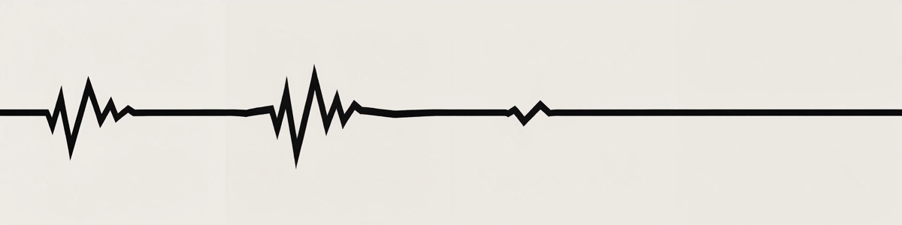
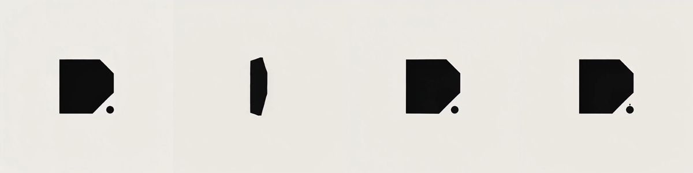
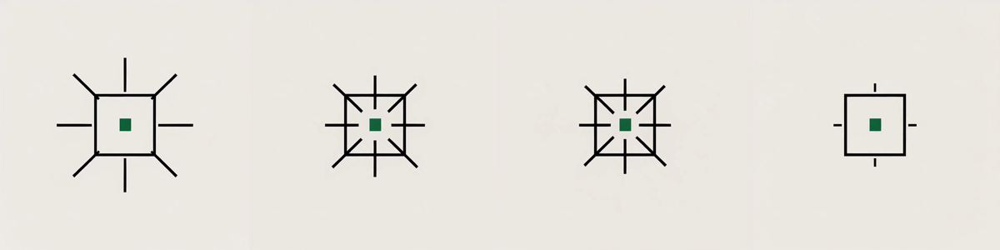
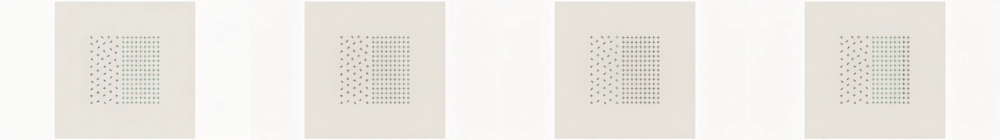
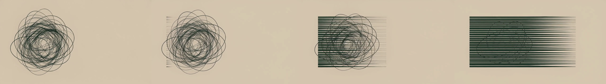
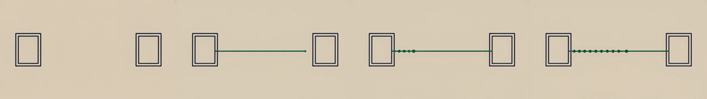

A · Flatlinelogo · 1:1 · 4s

frames 0 / 25 / 50 / 80 — chaos settling to flat
B · Notched squarelogo · 1:1 · 4s

frames 0 / 25 / 50 / 80 — quarter turn, settle
C · Reticlelogo · 1:1 · 4s

frames 0 / 25 / 50 / 80 — ticks lock on
D · Latticesection asset · 16:9 · 5s

frames 0 / 25 / 50 / 80 — disorder resolving to grid
E · Untanglesection asset · 16:9 · 5s

frames 0 / 25 / 50 / 80 — tangle to parallel lines
F · Connectsection asset · 16:9 · 5s

frames 0 / 25 / 50 / 80 — two systems joined